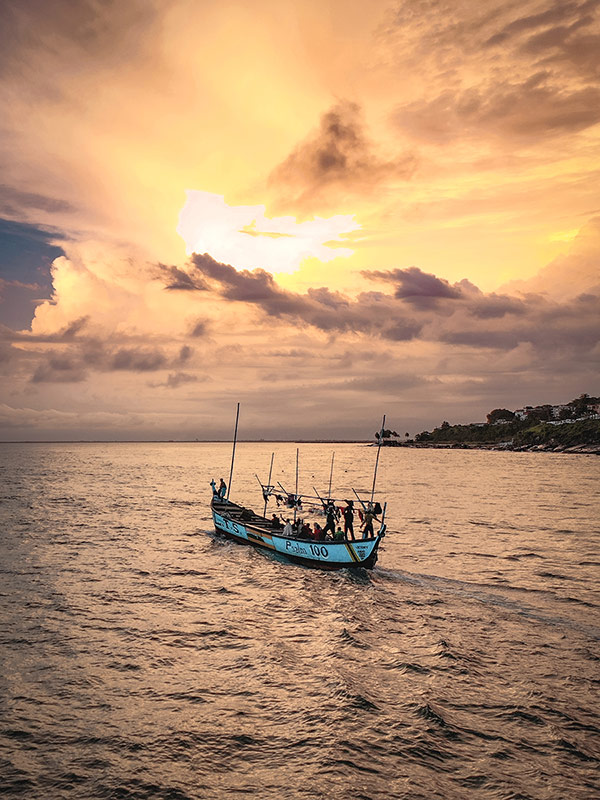
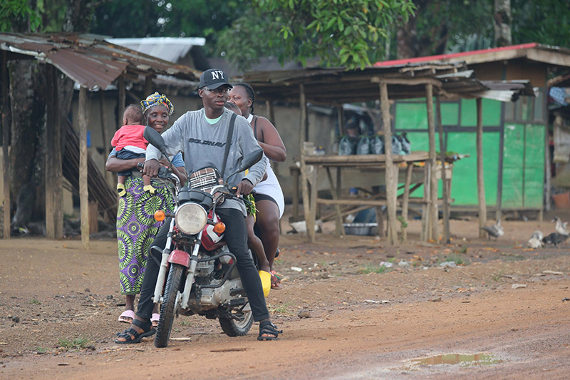
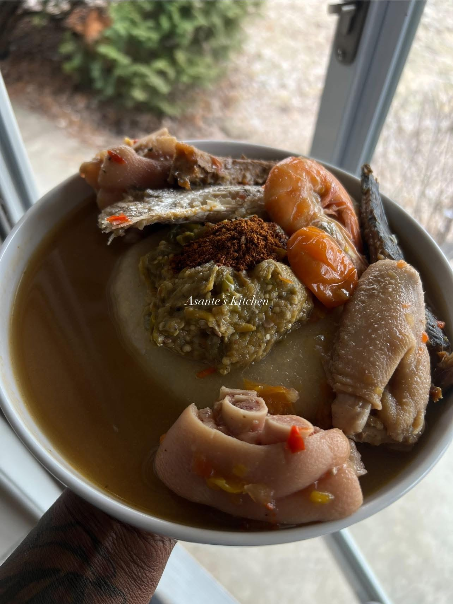
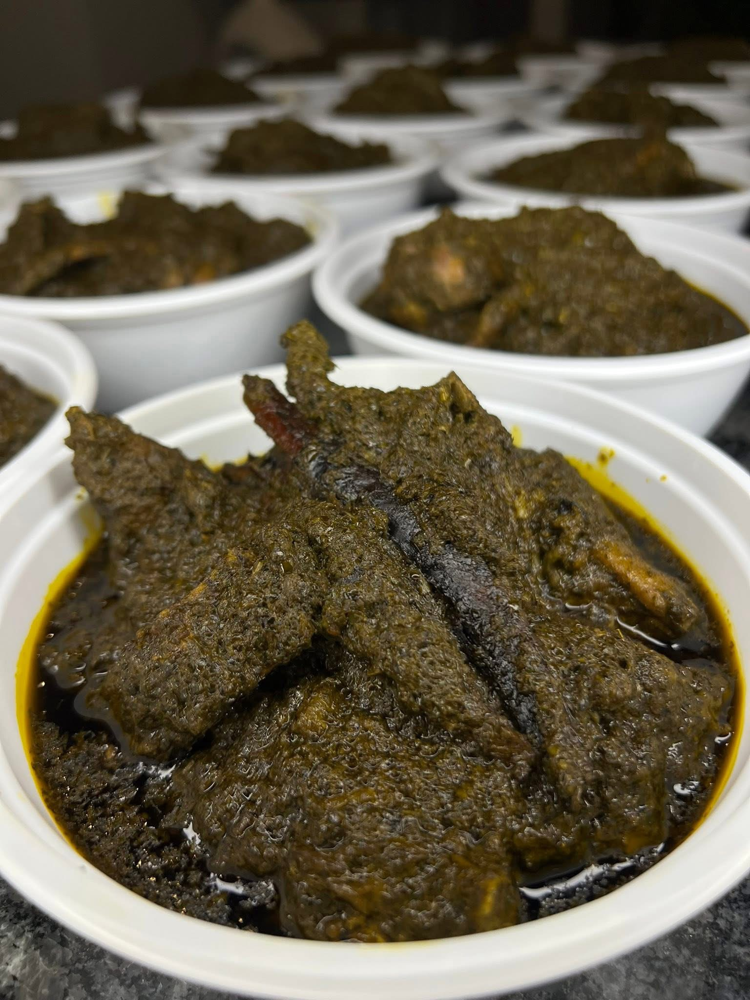
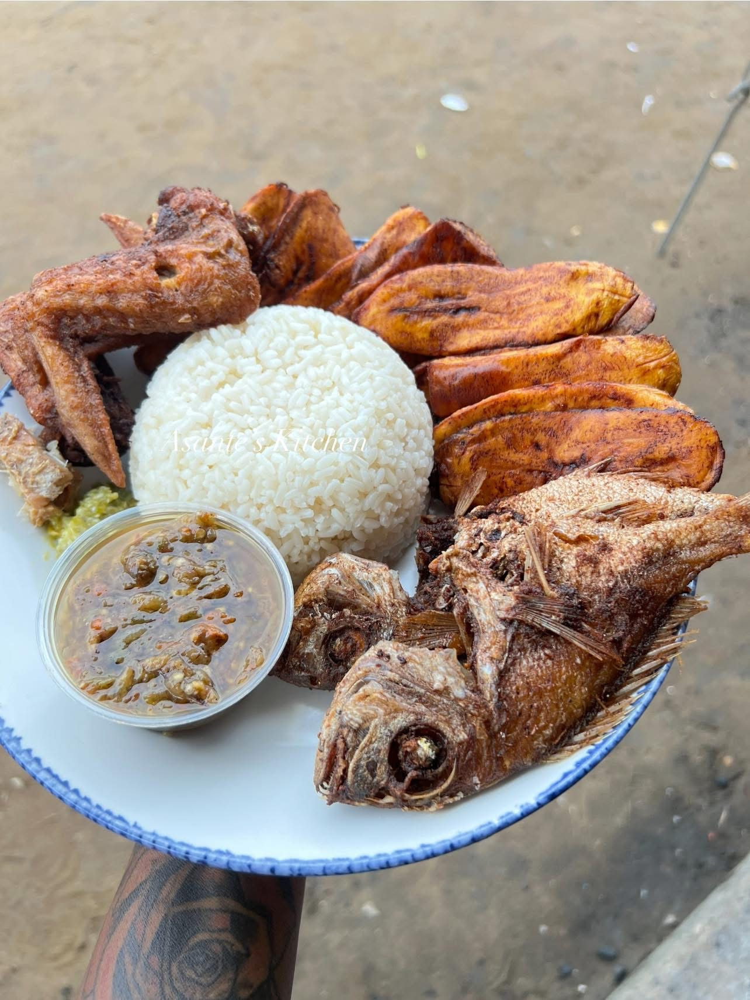
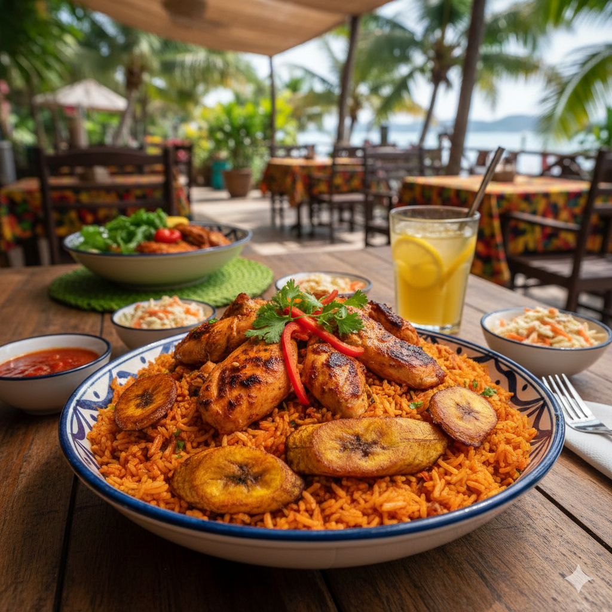
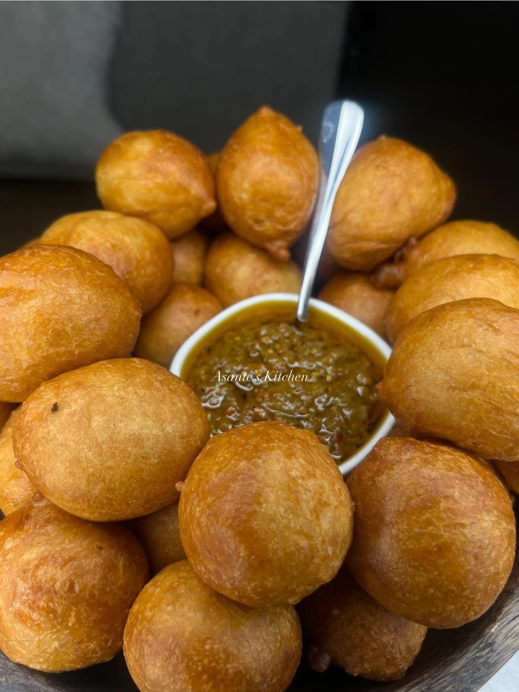

Everything you need before, during, and after your trip.

Liberia — a country where every coast, market, and meal tells a story of resilience and culture
Why Liberia's History Matters When You Visit

Despite everything Liberia has been through, its people remain some of the warmest and most welcoming in West Africa
Understanding Liberia's background shapes every interaction you'll have — from the roads you drive on to the warmth with which people welcome you. For the full founding story, see Liberia's Unique Story on the Home page. What follows is what that history means practically for your experience as a visitor.
What You Will See and Why
The resilience of people — Liberians have lived through so much yet remain welcoming and hopeful. That warmth is not performance; it is deeply genuine.
Infrastructure challenges — Poor roads, limited facilities, and intermittent utilities reflect the aftermath of civil wars that ended only in 2003, not lack of capability or effort.
Authentic connection — The warmth you experience shows Liberians' determination to be defined by hope and community, not by trauma. Come with patience and you will leave changed.
When Liberians welcome you into their home, share their food, or go out of their way to help, they are sharing a country that has been through everything. That deserves respect, patience, and genuine appreciation.
Language & Communication
English is Liberia's official language. However, Liberian English — sometimes called "Kolokwa" — has distinctive pronunciation, vocabulary, and grammar that may take adjustment. Many Liberians are multilingual, speaking English plus one or more indigenous languages.
Common Liberian Phrases
Useful phrases to know before you go
Phrase
Meaning
"How the body?" / "How your doing"
How are you? / How are you feeling?
"Small small"
Little by little, gradually, slowly
"Wherplay it erh"
Where is it? Asking for location
"Kukujumuku"
You're not in a situation, you don't know what it's like
"My pepo yor"
Thank you / expressing gratitude
Indigenous Languages
Kpelle is the most widely spoken indigenous language, followed by Bassa as the second most common. Regional languages include Gio, Mano, Grebo, Kru, Gola, Kissi, and Vai. Learning a few basic greetings in local languages is always appreciated, though English works everywhere.
Religion
Religious tolerance is generally strong in Liberia. The population is dominantly Christian with Islam as the next most common religion.
Liberian Food & Dining
Liberian cuisine deeply reflects West African traditions. Food is central to Liberian hospitality and such a core part of the experience. Take time to explore local food — it will be one of the highlights of your visit.
Essential Dishes to Try
Dumboy & Pepper Soup — Must Try

Dumboy & Pepper Soup — One of Liberia's most iconic dish, traditionally eaten communally by hand
Cassava dough pounded until sticky and stretchy, served with pepper soup — a spiced seafood broth. Eating dumboy is traditionally communal and hands-on: pinch off a piece, roll it, dip it in the soup, and eat with your right hand. Often eaten with a spoon at restaurants.
Cassava Leaf

Cassava Leaf — hearty pounded leaf sauce served over rice, a Liberian staple
Young cassava leaves pounded and cooked with palm oil or vegetable oil, onions, and meat or fish to create a hearty semi-thick sauce. Served over rice.
Dry Rice

Dry Rice with Fried Fish
A typical saturday household staple in Liberia. It is cooked with rice and protein preferences but typically with salted pork and smoked fish and served alonside fried fish.
Liberian Jollof Rice

Liberian Jollof Rice — the West African staple with generous protein and bold spicy flavor
The West African staple — there is always an informal debate between African countries as to who prepares it best, maybe you can be the judge. Liberian jollof is made with tomato paste, onions, peppers, and spices, often served with chicken. It stands out for its generous protein portions and spicy flavor.
Pepper Soup
Spicy, aromatic broth made with local spices, scotch bonnet peppers, and fish or meat. The spice level can be intense — approach with caution if you are not used to West African heat.
Fufu
Made from cassava — sometimes with plantain — pounded until smooth and served as a starchy accompaniment to soups and stews. Eaten by hand like dumboy.
Kala — Street Snack

Kala — sweet fried dough balls sold hot by street vendors, popular for breakfast
Fried dough balls sold by street vendors. Sweet, round, and served hot with pepper sauce on the side and a protein choice. Popular for breakfast or as a snack.
Where to Eat
Cold Bowl Shops
Small, informal roadside restaurants serving authentic Liberian food. Food is cheap but facilities are basic — plastic chairs, simple plates, and usually dished out from a big pot. The most immersive food experience available.
Monrovia Restaurants
Evelyn's Restaurant, Royal Hotel, Boulevard Palace, and Mamba Point hotel offer more formal dining with Liberian and international options. The Sinkor area has multiple restaurants to choose from. Lebanese and Chinese restaurants also exist, reflecting the diversity in Liberia.
Street Food
Street food — grilled fish, fried plantains, and roasted meat sold fresh citywide
Street vendors throughout cities sell grilled fish, fried plantains, roasted meat, and snacks. Food is generally safe if cooked fresh in front of you. Always drink bottled or filtered water — never tap water.
Important: Most restaurants are cash-only. Expect generous portions — rice forms the base of most meals.
Safety Considerations
Liberia is generally safe for tourists but use common urban precautions. Violent crime against tourists is rare. Liberians are generally honest and helpful, but poverty creates challenges for some — petty theft can occur especially in busy areas. Try to stay in a group of familiar faces at night and avoid poorly lit areas.
Money & Currency
Both Liberian Dollars (LRD) and U.S. Dollars (USD) circulate. Larger transactions usually happen in USD, smaller purchases in LRD. Bring USD in good condition — no torn or very old bills, as these may be rejected. ATMs exist in Monrovia but can be unreliable. Bring enough cash for your stay.
Transportation
Getting around Liberia can be challenging. Roads are often rough. During rainy season (May–October), some roads become impassable. Taxis and private drivers are available in Monrovia. For longer trips, hiring a driver with a 4x4 vehicle is recommended.
Recommended tour guides for county visits: Lauretta Cisse and Tuzee Toure.
Best Time to Visit
Dry Season (November–April) — Recommended
Roads are more passable, weather is sunny and hot, and travel is easier. The best time to explore rural counties, beaches, and natural areas across the country.
Rainy Season (May–October) — Approach with Caution
Heavy rains make travel difficult. Roads become muddy or impassable, some areas flood, and outdoor activities are limited. Unless you have specific reasons, avoid this season.
Support Local Economy
Tourism infrastructure is limited, but support Liberian-owned guesthouses, restaurants, and guides where possible. Your spending has greater direct impact in a developing economy than anywhere else you will travel.
Environmental Responsibility
Liberia has limited waste management. Avoid single-use plastics where possible, dispose of trash properly — which may mean carrying it with you — and be mindful of your environmental impact throughout your stay.
Plan Your Liberia Journey
Whether you're a solo traveler, joining a volunteer organization, or traveling with purpose — Liberia rewards those who come with an open heart and genuine curiosity.
Solo Traveler
Hire a local tour guide especially for county visits. Recommended: Lauretta Cisse and Tuzee Toure — both offer structured, meaningful travel experiences.
Volunteer & Organizational Travel
Connect through organizations working on education, agriculture, or community development for the deepest cultural immersion possible.
Travel with Purpose
Stay Liberian-owned. Eat cold bowl. Use local guides. Your spending has real, direct impact in an economy that is still rebuilding.